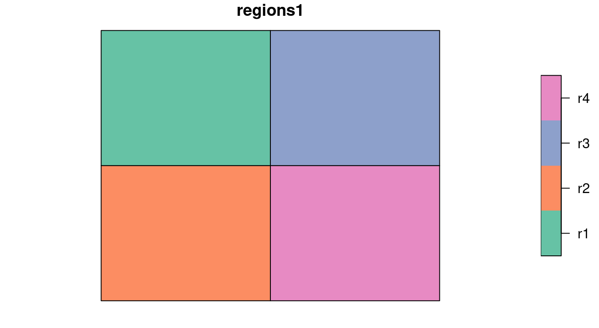
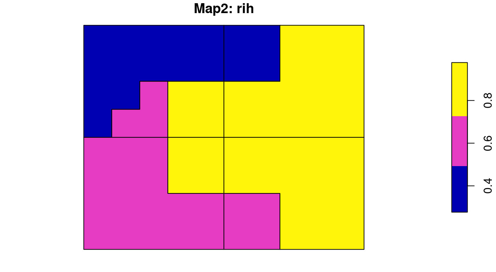
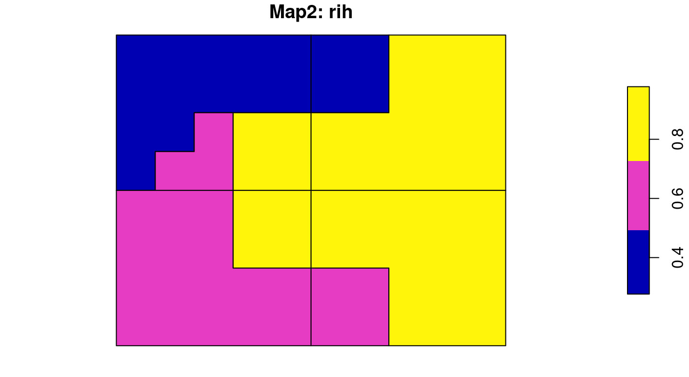

sabre: Spatial Association Between REgionalizations
Jakub Nowosad
2018-11-12
Source:vignettes/sabre.Rmd
sabre.RmdThe sabre (Spatial Association Between REgionalizations) is an R package for calculating a degree of spatial association between regionalizations or categorical maps. This package offers support for sf spatial objects, and the following methods:
- the V-measure method (Nowosad and Stepinski, 2018)
- the MapCurve method (Hargrove et al., 2006)
Basic example - SABRE
Two simple regionalizations would be used to show the basic concept of sabre.
The first map, regions1, has four regions (“r1”, “r2”, “r3”, “r4”) of the same size and shape. The second one, regions2, contains three irregular regions where “z1” is the smallest and “z3” being the largest. Our goal is to compare these two regionalizations and calculate a degree of spatial association between them.

It can be done with vmeasure_calc(), which calculates “V-measure”, “Homogeneity”, and “Completeness” and returns two preprocessed input maps. This function requires, at least, four arguments:
-
x- ansfobject containing the first regionalization -
x_name- a name of the column with regions names of the first regionalization -
y- ansfobject containing the second regionalization -
y_name- a name of the column with regions names of the second regionalization
Importantly, both x and y must contain POLYGONs or MULTIPOLYGONs and have the same coordinate reference system.
There are also two additional arguments - B and precision. If B > 1 then completeness is weighted more strongly than homogeneity, and if B < 1 then homogeneity is weighted more strongly than completeness. By default this value is 1. The vmeasure_calc() function calculates intersections of the input geometries internally using sf::st_intersection(), which depends on the coordinates values precision. The precision argument can be used when vmeasure_calc produces an error. For example, precision = 1000 rounds values to the third decimal places and precision = 0.001 uses values rounded to the nearest 1000.
regions_vm = vmeasure_calc(regions1, z, regions2, z)
regions_vm
#> The SABRE results:
#>
#> V-measure: 0.36
#> Homogeneity: 0.32
#> Completeness: 0.42
#>
#> The spatial objects could be retrived with:
#> $map1 - the first map
#> $map2 - the second mapThe result is a list with three metrics of spatial association - V-measure, Homogeneity, Completeness - and two sf objects with preprocessed input maps - $map1 and $map2. All of the above metrics are between 0 and 1, where larger values are desired. V-measure is a measure of an overall spatial correspondence between input maps. Homogeneity shows an average homogeneity of the regions in the second map with respect to the regions in the first map. Completeness is a function of homogeneity of the regions in the first map with respect to the regions in the second map. The spatial outputs, $map1 and $map2, have two columns. The first one contains regions’ names and the second one (rih) describes regions’ inhomogeneities. Geometries of these spatial outputs show intersections of the two input regionalizations.
 

For example, “Map1” shows that three regions have the same inhomogeneity of 0.48. This is due a fact that all of these three have two regions from the second map. The upper left region has a larger inhomogeneity of 0.86 as its area “belongs” to three different regions in the second map. More information about this method and its applications can be found in Nowosad and Stepinski (2018).
Basic example - MapCurves
The sabre also allows for calculating a degree of spatial association between regionalizations using the MapCurve method (Hargrove et al., 2006). The mapcurves_calc() function also requires four arguments, x, x_name, y, and y_name. It also accepts an additional argument - precision. All of these arguments are explained in the previous section.
regions_mc = mapcurves_calc(regions1, z, regions2, z)
regions_mc
#> The MapCurves results:
#>
#> The goodness of fit: 0.61
#> Reference map: x
#>
#> The spatial objects could be retrived with:
#> $map1 - the first map
#> $map2 - the second mapThe mapcurves_calc() returns a list with a value of the goodness of fit (GOF), the map used as a reference, and two sf objects with preprocessed input maps - $map1 and $map2. Read Hargrove et al. (2006) to learn more about this method.
References
- Nowosad, Jakub, and Tomasz F. Stepinski. “Spatial association between regionalizations using the information-theoretical V-measure.” International Journal of Geographical Information Science (2018). https://doi.org/10.1080/13658816.2018.1511794
- Rosenberg, Andrew, and Julia Hirschberg. “V-measure: A conditional entropy-based external cluster evaluation measure.” Proceedings of the 2007 joint conference on empirical methods in natural language processing and computational natural language learning (EMNLP-CoNLL). 2007.
- Hargrove, William W., Forrest M. Hoffman, and Paul F. Hessburg. “Mapcurves: a quantitative method for comparing categorical maps.” Journal of Geographical Systems 8.2 (2006): 187.